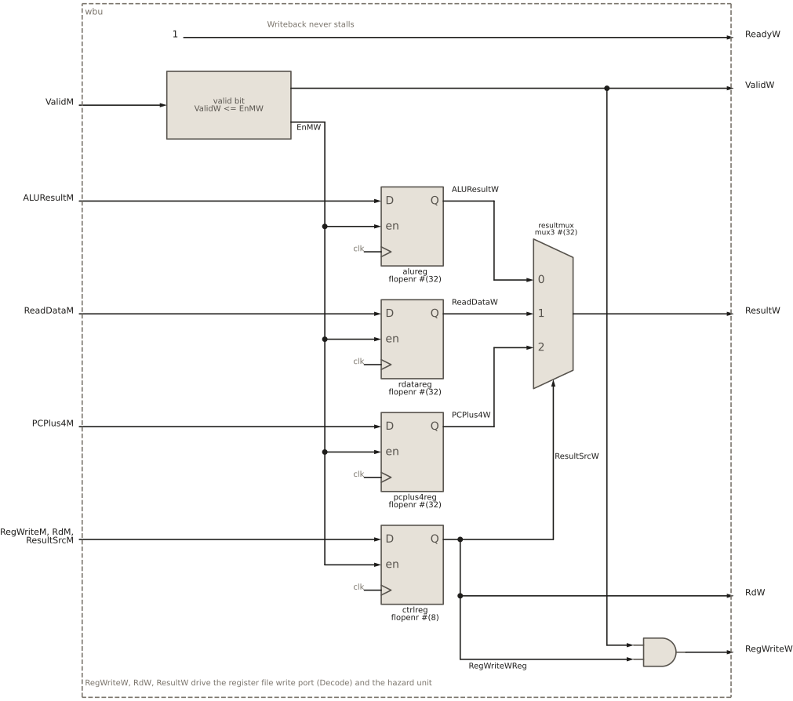

12 Writeback unit
Writeback unit
12.1 Goal for this week
- Know what the writeback unit (WBU) does for each kind of instruction
- Read its interface: the handshake with the Memory stage and the outputs that go back to Decode and Execute
- Understand why Writeback never stalls, and why its register write is qualified with the valid bit
12.2 Introduction
The writeback unit is the last stage of the HIPV pipeline. It is the place where an instruction retires: its result becomes part of the architectural state, the registers that a program can see, and the instruction leaves the pipeline for good. After Writeback, the core is in exactly the state that the algorithmic description of RV32I in the pipeline chapter prescribes.
It is also the simplest stage. It talks to no memory, needs no FSM, and computes nothing. Its one job is to write the result of the instruction into the register file, if the instruction has a result. What that result is depends on the instruction:
| Instructions | Written to rd |
|---|---|
arithmetic and logic (add, addi, …), lui, auipc |
the ALU result |
loads (lb, lh, lw, lbu, lhu) |
the data read from memory |
jumps (jal, jalr) |
the return address, PC + 4 |
| stores, branches | nothing: they have no destination register |
Stores and branches pass through Writeback too. Their effects have already happened, a memory write in the Memory stage and a redirect in Execute, so in Writeback they do nothing except retire.
12.3 Interface of the WBU
The WBU has the handshake with the Memory stage, the inputs from it, and the writeback outputs:
module wbu (input logic clk, reset,
// handshake with the Memory stage
input logic ValidM,
output logic ReadyW,
// inputs from Memory
input logic [31:0] ALUResultM, ReadDataM, PCPlus4M,
input logic [4:0] RdM,
input logic RegWriteM,
input logic [1:0] ResultSrcM,
// writeback outputs (to the register file and hazard unit)
output logic ValidW,
output logic RegWriteW,
output logic [4:0] RdW,
output logic [31:0] ResultW);- Handshake with the Memory stage:
ValidMandReadyW. - Inputs from the Memory stage: the three candidate results (
ALUResultM,ReadDataMandPCPlus4M), the destination registerRdM, the write enableRegWriteM, andResultSrcM, which says which of the three results is the right one. - Writeback outputs:
RegWriteW,RdWandResultWsay whether to write, which register, and what. They travel back up the pipeline to two places:- to the IDU, where they drive the write port of the register file;
- to the IEU and the hazard unit, where
ResultWis one of the forwarded values, andRegWriteWandRdWdecide when it is used.
ValidWmarks the cycle in which an instruction retires. Nothing in the core uses it, becauseRegWriteWalready carries the valid bit, but it is a useful marker in waveforms, and the natural place to attach an instruction trace later.
12.4 Structure of the WBU

ReadyW tied to 1), the M/W pipeline registers, the result multiplexer resultmux, and the AND gate that qualifies RegWriteW with the valid bit.
Figure 12.1 shows the WBU. It has three parts:
- the handshake control, which is especially simple here;
- the M/W pipeline registers, which store the instruction coming from the Memory stage;
- the writeback logic: the result multiplexer and the generation of the register write enable.
12.5 Handshake control
// writeback never stalls
assign ReadyW = 1'b1;
assign EnMW = ValidM & ReadyW;
// M/W valid bit
always_ff @(posedge clk)
if (reset) ValidW <= 1'b0;
else ValidW <= EnMW;EnMW is the handshake between the Memory stage and Writeback: the Memory stage offers an instruction (ValidM) and Writeback accepts it (ReadyW). As in every stage, it is the enable of the pipeline registers.
ReadyW is constant 1. In every other stage, ready said “my own instruction leaves at this edge, or I am empty”. Writeback is the last stage: its instruction leaves the pipeline after one cycle, unconditionally, because there is no next stage that could be busy. The register file write happens at the end of that cycle and always succeeds. So Writeback can always accept a new instruction, and EnMW reduces to ValidM.
The valid bit ValidW follows the same idea in a simpler form. In the other stages, it was loaded only when the stage was ready. Here the stage is always ready, so it is loaded at every edge, with 1 when an instruction arrives and 0 when a bubble arrives.
12.6 Pipeline registers
The pipeline registers are written at the handshake, on EnMW:
// M/W pipeline registers
flopenr #(32) alureg(.clk(clk), .reset(reset), .en(EnMW), .D(ALUResultM), .Q(ALUResultW));
flopenr #(32) rdatareg(.clk(clk), .reset(reset), .en(EnMW), .D(ReadDataM), .Q(ReadDataW));
flopenr #(32) pcplus4reg(.clk(clk), .reset(reset), .en(EnMW), .D(PCPlus4M), .Q(PCPlus4W));
flopenr #(8) ctrlreg(.clk(clk), .reset(reset), .en(EnMW),
.D({RegWriteM, RdM, ResultSrcM}),
.Q({RegWriteWReg, RdW, ResultSrcW}));ALUResultW: the result computed by the ALU in Execute.ReadDataW: the word read from memory by a load, already shifted and extended by the LSU.PCPlus4W: the address of the next instruction,PC + 4, whichjalandjalrwrite as their return address.ctrlregpacks the three control fields into one 8-bit register:RegWriteWReg(1 bit), the destination registerRdW(5 bits), andResultSrcW(2 bits), which selects which of the three results is written back.
Only one of the three results matters for any given instruction. The WBU stores all three anyway, because it is simpler and cheaper to select at the end than to decide earlier which one to carry.
12.7 Writeback logic
12.7.1 The result multiplexer
The result is selected by a three-input multiplexer, the same generic mux3 as the forwarding multiplexers in Execute:
// result selection
mux3 #(32) resultmux(.D0(ALUResultW), .D1(ReadDataW), .D2(PCPlus4W),
.S(ResultSrcW), .Y(ResultW));The select ResultSrcW was decided long ago, in Decode, by the main decoder, and has travelled with the instruction through three pipeline registers. Its three values are the constants from hipv_pkg:
ResultSrcW |
Name | ResultW |
Instructions |
|---|---|---|---|
00 |
RESULT_ALU |
ALUResultW |
arithmetic and logic, lui, auipc |
01 |
RESULT_MEM |
ReadDataW |
loads |
10 |
RESULT_PC4 |
PCPlus4W |
jal, jalr |
For stores and branches, the main decoder sets RESULT_ALU, but the value does not matter, because these instructions do not write a register.
ResultSrc is used in two stages. In the Memory stage, ResultSrcM picks ForwardDataM and identifies a load. In Writeback, ResultSrcW picks the value that is written into the register file and forwarded from W.
12.7.2 The register write enable
RegWriteW enables the write into the register file. It drives the write enable WE3 of the register file in Decode, so a register changes only when it is 1:
// register write, qualified with the stage valid bit
assign RegWriteW = RegWriteWReg & ValidW;It has two conditions:
RegWriteWReg: the instruction has a destination register. This isRegWriteDfrom the main decoder, carried through the pipeline. It is 0 for stores and branches.ValidW: the stage holds a real instruction.
The second condition looks redundant at first. RegWriteM coming from the Memory stage is already qualified with that stage’s valid bit, so a bubble arrives with RegWriteM = 0. The catch is the enable of the pipeline registers. When a bubble arrives, EnMW is 0, so ctrlreg is not loaded, and RegWriteWReg keeps the value of the previous instruction, which has already retired. Without ValidW, that instruction would write its register again in every bubble cycle that follows, and would keep showing up to the hazard unit as an instruction in Writeback.
In HIPV, this repeated write happens to be harmless: RdW and ResultW are held too, so the same value lands in the same register, and the forwarded value equals what the register file already holds. But it only works by coincidence. It would break as soon as anything changed the held values, and it makes every waveform misleading, showing writes that belong to no instruction. Only ValidW knows whether the registers hold a fresh instruction, so it is the right signal to qualify the write. The unit testbench checks exactly this: RegWriteW stays low for bubbles.
The same pattern appears in every stage: a control signal that causes a side effect, a register write here or a memory access in the LSU, is qualified with the valid bit of its stage, because the contents of the pipeline registers are meaningful only while that bit is 1.
12.7.3 Where the outputs go
The three writeback outputs leave the WBU in two directions:
- To the IDU, where they form the write port of the register file:
RegWriteWis the write enableWE3,RdWthe addressA3, andResultWthe dataWD3. The register is written at the end of the cycle, and the write-first bypass in the register file lets the instruction in Decode see the new value already in this cycle. - To the IEU, where
ResultWis theFWD_WBinput of the forwarding multiplexers. The hazard unit selects it whenRegWriteWis 1 andRdWmatches a source register of the instruction in Execute.
So the result of an instruction is available to the instructions behind it from three places: forwarded from the Memory stage while it is there, forwarded from Writeback one cycle later, and through the register file from then on.
12.8 Summary
The WBU is the end of the pipeline, where an instruction retires. It never stalls, so its handshake reduces to ReadyW = 1. It stores the three candidate results, selects the one that the decoder chose with ResultSrcW, and writes it into the register file in Decode, qualified with its valid bit so that bubbles never write. The same three signals, RegWriteW, RdW and ResultW, also feed the forwarding logic in Execute.
This completes the five stages of HIPV. Each one has the same skeleton, a valid/ready handshake with a valid bit and a set of pipeline registers, and adds its own work: fetching, decoding, executing, accessing memory, and writing back.